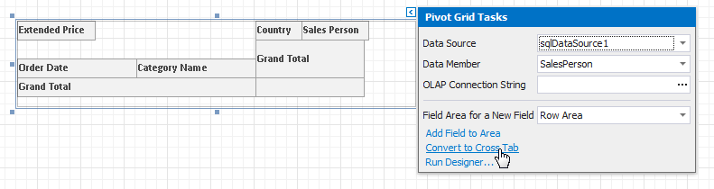
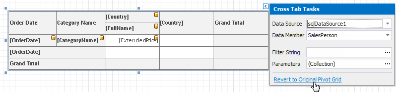

Use Charts and Pivot Grids
Refer to the following topics for instructions on how to add charts and pivot grids to reports:
Chart
Use the Chart control to add a chart to a report.
- Use Charts in Reports
- Add a Chart (Set Up Series Manually)
- Add a Chart (Use a Series Template)
- Use Charts to Visualize Grouped Data
Use Chart and Pivot Grid Linked Together
Convert a Pivot Grid to a Cross Tab
To migrate an existing Pivot Grid control to a new Cross Tab control, click the Pivot Grid's smart tag and select Convert to Cross Tab.

Note that the Cross Tab does not support specific Pivot Grid functionality:
- The Cross Tab cells cannot display pictures (both static and dynamic);
- The Chart control cannot use the Cross Tab as a data source;
- The Cross Tab does not support data headers that are used to manage location of data field headers;
- The Cross Tab does not support the Pivot Grid's predefined aggregate functions.
If the conversion result does not suit your requirements, you can restore the Pivot Grid. Click the Cross Tab's smart tag and select Revert to Original Pivot Grid.
